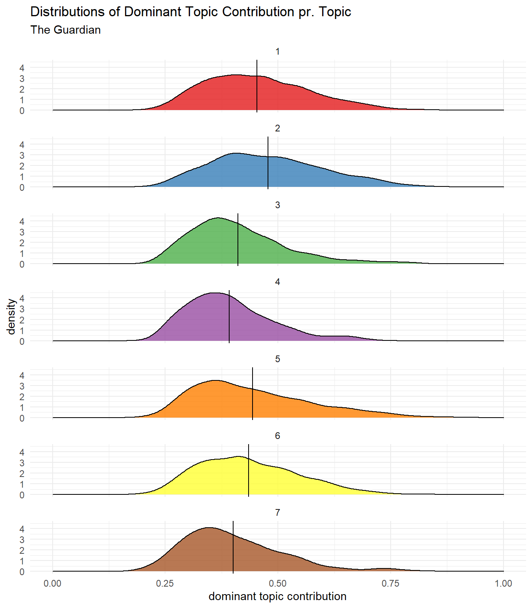

Chapter 15 LDA Topic Modelling
Part of this chapter is written in Python. To see the original file go to the folder python_scripts/.
All the code in the chapter is run on both df_NYT and df_guardian but some of the code is only shown for df_nyt.
In this Chapter we are going to make a LDA topic model for the dataset df_nyt and df_guardian.
15.1 Packages and Data
Lets get to the code. We load a bunch of packages. Importantly, we will use a new library called gensim which is used for topic modelling. We also use spaCy and pyLDAvis which is used for vizualizing the model output.
import numpy as np
import pandas as pd
import glob
#Gensim
import gensim
import gensim.corpora as corpora
from gensim.utils import simple_preprocess
from gensim.models import CoherenceModel
from gensim.models import TfidfModel
from gensim.models import CoherenceModel
#spacy
import spacy
#vis
import pyLDAvis
import pyLDAvis.gensim_modelsThen we load the dataset containing the articles.
df1 = pd.read_csv("data/new_york_times/NYT_clean_1.csv")
df2 = pd.read_csv("data/new_york_times/NYT_clean_2.csv")
df3 = pd.read_csv("data/new_york_times/NYT_clean_3.csv")
df = pd.concat([df1, df2, df3])15.2 Preprocessing
Although the bread text of all the articles is already preprocessed (lemmatization, removal of stopwords and removal of punctuation) we still need a little bit of preprocessing to make the LDA topic model. Here we define a helper function that break down the articles by individual words and apply a function called simple_preprocess from gensim.
def gen_words(texts):
final = []
for text in texts:
new = gensim.utils.simple_preprocess(text)
final.append(new)
return (final)We use the function on the articles from the dataset, to generate a list of all the articles broken down into words called data_words.
data_words = gen_words(df["articles_clean"])Now lets see what this helper function actually did.
print("Before applying the helper function gen_words: \n" + str(df.iloc[0,4][0:142]))
print("\nAfter applying the helper function gen_words: \n" + str(data_words[0][0:20]))Gensim Preprocessing
This is how the data looks before and after applying the helper function gen_words. Before application we see that the data is simply a collection of words. After application we see that all the words have been split into their element in a list. So now each article is a list where the elements of that list is the individual words.
15.3 Bigrams and Trigrams
Next up we make bigrams and trigrams. Bigrams are 2 consecutive word in a sentence that occur with a high frequency. Trigrams are 3 consecutive words in a sentence that occur with a high frequency. Lets take an example where we have the following sentences:
- The connection of devices is wireless.
- The speakers have a solid bass.
- The wireless speakers are expensive.
In sentence 1 the word wireless occurs by itself. Similarly, in sentence 2 the word speakers occur by itself. However, in sentence 3 the two words occur together in a meaningful way to form a single unit. If wireless speakers occurs with a high enough frequency, we call it a bigram.
Now we get to the code. We look for bigrams using the function Phrases from the library gensim. This function takes data_words which we created earlier and min_count which determines the minimum number of times two words need to occur together to be considered a bigram. It also takes threshold which determines the the number of phrases that are found. A higher threshold will result in fewer bigrams. It is important to adjust the threshold so it doesn’t pick up too few or too many bigrams. We also look for trigrams using the same function but this time using the bigram_phrases as input.
bigram_phrases = gensim.models.Phrases(data_words, min_count=5, threshold=80)
trigram_phrases = gensim.models.Phrases(bigram_phrases[data_words], threshold=80)Then we create the objects bigram and trigram.
bigram = gensim.models.phrases.Phraser(bigram_phrases)
trigram = gensim.models.phrases.Phraser(trigram_phrases)Next we make two functions that add the bigrams and trigrams into data_words.
def make_bigrams(texts):
return([bigram[doc] for doc in texts])
def make_trigrams(texts):
return ([trigram[bigram[doc]] for doc in texts])Here we apply the functions.
data_bigrams = make_bigrams(data_words)
data_bigrams_trigrams = make_trigrams(data_bigrams)Now lets see which bigrams and trigrams have been picked up.
print("Without bigrams and trigrams:\n" + str(data_words[1067][0:100]))
print ("\nWith bigrams and trigrams:\n" + str(data_bigrams_trigrams[1067][0:100]))Bigrams and Trigrams
In the first section without bigrams and trigrams we see that the data appears as individual units. In the second section we see the same words as before but we also see bigrams and trigrams highlighted by a yellow color.
15.4 TF-IDF Removal
TF-IDF is a statistical measure that evaluates how relevant a word is to a document in a collection of documents. It is a way of ranking how important a word is to a document in a collection of documents. TF-IDF is short for term frequency - inverse document frequency. Term frequency is the frequency of a word in a document. You simply count how many times a word appears in a document. Inverse document frequency indicates how common or rare a word is in the entire collection of documents. The closer to 0, the more common a word is in the collection of documents. Multiplying these two numbers results in the TF-IDF score for a word. The higher the score, the more relevant a word is to a particular document.
TF-IDF has many applications. Here i use it to remove words that don’t add any meaningful value to the topic model. I am going to remove frequently occurring words such as say. The reason we do this is that some words are so generic that they do not add any meaningful information to the topics in the topic model. The result of this removal is that our topics will be more distinct, i.e. there will be less overlap between topics.
We start be defining the object texts which is the list of words of all articles containing bigrams and trigrams.
texts = data_bigrams_trigramsThen we make a dictionary from texts which counts the occurrence of words in each article.
id2word = corpora.Dictionary(texts)We convert all the documents into a bag of words.
corpus = [id2word.doc2bow(text) for text in texts]We make the TD-IDF model and a variable called low_value which determines the threshold where words are removed. A higher threshold will result in more words being removed.
tfidf = TfidfModel(corpus, id2word=id2word)
low_value = 0.03Here is a large chunk of code, but don’t sweat it. It basically looks for words that are so generic across all documents that they don’t add any meaningful value to the topic model. The end product is a new corpus where these generic words are removed.
words = []
words_missing_in_tfidf = []
for i in range(0, len(corpus)):
bow = corpus[i]
low_value_words = [] #reinitialize to be safe. You can skip this.
tfidf_ids = [id for id, value in tfidf[bow]]
bow_ids = [id for id, value in bow]
low_value_words = [id for id, value in tfidf[bow] if value < low_value]
drops = low_value_words+words_missing_in_tfidf
for item in drops:
words.append(id2word[item])
words_missing_in_tfidf = [id for id in bow_ids if id not in tfidf_ids] # The words with tf-idf score 0 will be missing
new_bow = [b for b in bow if b[0] not in low_value_words and b[0] not in words_missing_in_tfidf]
corpus[i] = new_bowSo now our texts contain bigrams and trigrams and frequently occurring words have been removed. Now to the fun part.
15.5 Base topic model
Now we can finally create the LDA topic model using gensim. The two main inputs to the topic model are our dictionary/id2word and corpus which we created earlier. We can adjust many hyperparameters such as random_state and alpha to make the model perform optimally. We can also choose the number of topics in num_topics. Here i just choose 10 topics.
lda_model = gensim.models.ldamodel.LdaModel(corpus = corpus,
id2word = id2word,
num_topics = 10,
random_state = 100,
update_every = 1,
chunksize = 100,
passes = 10,
alpha = "auto",
)Now we can visualize the model. If you want to play around with it yourself go to the original python script.
pyLDAvis.enable_notebook()
vis = pyLDAvis.gensim_models.prepare(lda_model, corpus, id2word, mds = "mmds", R=30)
visBase Topic Model for New York Times
In the base topic model for New York Times we see that 10 topics have been created. On the left we see topics 1-10 plotted on a 2-dimensional space. The size of the circles indicate the prevalence of the topic throughout the articles. Larger means more prevalent. We see that the topics are well spread throughout the 2-dimensional space and that there is no obvious overlap between topics. On the right we see the top-words for topic number 1.
15.6 Selecting the number of topics based on coherence score
There are many ways of evaluating an LDA topic model to see if it performs as we intend it to. Likewise there are many hyperparameters that can evaluated and tuned accordingly such as alpha and beta. Here i will evaluate the model by choosing the number of topics using something called a coherence score. There are many coherence measures, here I use one called C_v.
In the next section of code I compute the coherence score for topic models with a varying number of topics to see which number of topics is the optimal.
I start by defining a helper function which creates an LDA model. It takes k as argument which is the number of topics. It then adds a coherence measure to the model and returns a coherence score.
def compute_coherence_values(k):
lda_model = gensim.models.ldamodel.LdaModel(corpus=corpus,
id2word=id2word,
num_topics=k,
random_state=100,
chunksize=100,
passes=10,
alpha="auto")
coherence_model_lda = CoherenceModel(model=lda_model, texts=data_bigrams_trigrams, dictionary=id2word, coherence='c_v')
return coherence_model_lda.get_coherence()Now that we defined a helper function we can iterate over a range of topics, create a topic model for each and calculate a coherence score for each topic model. I used a range of 1:30 topics with a step size of 2. We save the result as a dataframe.
# Topics range
min_topics = 1
max_topics = 30
step_size = 2
topics_range = range(min_topics, max_topics, step_size)
#empty dataframe
model_results = {'Topics': [],
'Coherence': []
}
# iterate through number of topics
for k in topics_range:
print(k)
# get the coherence score for the given topics
cv = compute_coherence_values(k=k)
# Save the model results
model_results['Topics'].append(k)
model_results['Coherence'].append(cv)
pd.DataFrame(model_results).to_csv('data/lda_topic_model/tuning_results_nyt.csv', index=False) 15.6.1 Selecting number of topics for New York Times
We now move into R for a lil bit to make some plots. Here we load packages tidyverse (Wickham et al. 2019), wesanderson (Ram and Wickham 2018) and RColorBrewer (R-rcolorbrewer?).
pacman::p_load(tidyverse, wesanderson, RColorBrewer)Here I quickly define some color palettes with colors that i like. These palettes will be used for different plots. The same colors will be used consistently throughout the notebook.
color_palette_newspaper <- c(wes_palette("Chevalier1")[1], wes_palette("Darjeeling2")[2])Lets plot the coherence score against number of topics for New York Times.
lda_tuning_results_NYT <- read_csv("data/lda_topic_model/tuning_results_NYT.csv")
lda_tuning_results_NYT %>%
ggplot() +
aes(x=Topics, y=Coherence) +
geom_point(color = color_palette_newspaper[1], size = 1.1) +
geom_line(color = color_palette_newspaper[1], size = 1.2) +
scale_x_continuous(breaks = seq(1, 30, by = 2)) +
theme_minimal() +
labs(x="Number of Topics", y="Coherence Score", title = "Choosing Optimal Number of Topics for New York Times") +
ylim(0.38,0.52)(#fig:tuning_nyt)Coherence score plotted for topic models with varying number of topics. 7 Topics are chosen for the topic model in New York Times
Figure @ref(fig:tuning_nyt) outlines the coherence score for the number of topics in the topic model on articles from New York Times. We want to pick the value in the graph where there is a breaking point. This is the point where the coherence score is highest before flattening out. In other words we want to pick the lowest number of topics where the coherence score begins to level off. I choose to go with 7 topics for the topic model in New York Times
15.6.2 Selecting number of topics for The Guardian
lda_tuning_results_guardian <- read_csv("data/lda_topic_model/tuning_results_guardian.csv")
lda_tuning_results_guardian %>%
ggplot() +
aes(x=Topics, y=Coherence) +
geom_point(color = color_palette_newspaper[2], size = 1.1) +
geom_line(color = color_palette_newspaper[2], size = 1.2) +
scale_x_continuous(breaks = seq(1, 30, by = 2)) +
theme_minimal() +
labs(x="Number of Topics", y="Coherence Score", title = "Choosing Optimal Number of Topics for The Guardian") +
ylim(0.38,0.52)(#fig:tuning_guardian)Coherence score plotted for topic models with varying number of topics. 7 Topics are chosen for the topic model in The Guardian
Figure @ref(fig:tuning_guardian) outlines the coherence score for the number of topics in the topic model on articles from The Guardian. Using the same criteria as above we should choose the number of topics to be 13. However, this seems like too many topics and it will be difficult to compare 13 topics to the 7 topics chosen for New York Times. Therefore I choose to go with 7 topics for the topic model in The Guardian
15.7 Building the topic models
Here we build the topic models for New York Times and The Guardian respectively by using the number of topics designated in the previous section.
15.7.1 New York Times topic model
We create the final model with the selected number of topics for NYT, changing num_topics to 7.
lda_model_nyt = gensim.models.ldamodel.LdaModel(corpus = corpus,
id2word = id2word,
num_topics = 7,
random_state = 100,
update_every = 1,
chunksize = 100,
passes = 10,
alpha = "auto",
)We plot it. If you want to play around with it yourself go to the original python script.
pyLDAvis.enable_notebook()
vis = pyLDAvis.gensim_models.prepare(lda_model_nyt, corpus, id2word, mds = "mmds", R=30)
visTopic Model for New York Times
In the topic model for New York Times we see that 7 topics have been created. On the left we see topics 1-7 plotted on a 2-dimensional space. The size of the circles indicate the prevalence of the topic throughout the articles. Larger means more prevalent. We see that the topics are well spread throughout the 2-dimensional space and that there is no obvious overlap between topics. On the right we see the top-words for topic number 1. I highly encourage you to run the python script yourself and play around with the vizualisation.
15.7.2 The Guardian topic model
Same procedure for the guardian, changing the num_topics to 7.
lda_model_guardian = gensim.models.ldamodel.LdaModel(corpus = corpus,
id2word = id2word,
num_topics = 7,
random_state = 100,
update_every = 1,
chunksize = 100,
passes = 10,
alpha = "auto",
)
pyLDAvis.enable_notebook()
vis = pyLDAvis.gensim_models.prepare(lda_model_guardian, corpus, id2word, mds = "mmds", R=30)
visTopic Model for The Guardian
In the topic model for The Guardian we see that 7 topics have been created. On the left we see topics 1-7 plotted on a 2-dimensional space. We see that the topics are well spread throughout the 2-dimensional space and that there is no obvious overlap between topics. On the right we see the top-words for topic number 1. I highly encourage you to run the python script yourself and play around with the vizualisation.
15.8 Assigning one topic to each article
Remember that each article in an LDA topic model is comprised of a distribution of topics. Let me elaborate with an example.
The topic distribution for article x might look something like this:
tibble(
Topic = c(1,2,3,4,5,6,7),
Topic_contribution = c(0.05, 0.10, 0.30, 0.02, 0.03, 0.05, 0.45)
) %>%
knitr::kable(caption = "Example: Topic distribution for article x",
col.names = c("Topic Number", "Topic Contribution"))| Topic Number | Topic Contribution |
|---|---|
| 1 | 0.05 |
| 2 | 0.10 |
| 3 | 0.30 |
| 4 | 0.02 |
| 5 | 0.03 |
| 6 | 0.05 |
| 7 | 0.45 |
We see that article x is not fit into a single topic but rather that each topic has a probability associated to it. All these probabilities add up to 1. We are going to reduce this dimensionality, such that each article is assigned to the topic which is has the highest probability of belonging to. In essence, we are throwing away the probabilistic nature of the model, but in return we get a format that is easier to handle. In this example article x would be assigned to topic number 7.
Now back to the real business. The code below iterates through all the articles in the dataframe and extract the probability of each topic for each article.
all_topics = []
#looping through all the articles in df
for i in range(len(df_nyt)):
#getting the probability and index of each topic for given article
top_topics = lda_model_nyt.get_document_topics(corpus[i], minimum_probability=0.0)
#checking if there was some lists that were not functioning correctly
if len(top_topics) != 7:
print("List of Topics is not 7 in article number " + str(i))
#removing the index of the topic, keep only the probabilities
topic_vec_prop = [top_topics[i][1] for i in range(7)]
all_topics.append(topic_vec_prop)Then, for each article we find the topic with the highest probability and we also find the probability of that topic.
dominant_topic = []
topic_contribution = []
for i in all_topics:
max_prop = max(i)
max_index = i.index(max_prop)
dominant_topic.append(max_index)
topic_contribution.append(max_prop)We save the dominant topic and its contribution to two new columns in the dataframe.
df['dominant_topic'] = dominant_topic
df['topic_contribution'] = topic_contributionAnd we save the dataframe with the added columns.
#splitting into three datasets
df1 = df.iloc[0:7500,]
df2 = df.iloc[7501:15000,]
df3 = df.iloc[15001:21109, ]
#saving to three new files
df1.to_csv("data/new_york_times/NYT_clean_1.csv", index = False)
df2.to_csv("data/new_york_times/NYT_clean_2.csv", index = False)
df3.to_csv("data/new_york_times/NYT_clean_3.csv", index = False)15.8.1 Evaluating the assignment of one article
All right now we have assigned one topic to each article. This format is easy to handle but it throws away a lot of information from the topic model. As described in the example in section ?? some articles have clear distributions, making them belong more clearly to a single topic whereas other articles are more difficult to place inside a single topic.
We basically want to articles to have a clear distribution, showing a clear belonging to a single topic. We get a sense of how well the articles fit into a single topic by making two plots:
- Plotting the distribution of
topic_contributionwhich is the probability of the dominant topic. - Plotting the distribution of
topic_contributionfor each topic, to see if certain topics are more problematic than others.
We start by loading the data for both NYT and The Guardian.
#NYT
df1 <- read_csv("data/new_york_times/NYT_clean_1.csv")
df2 <- read_csv("data/new_york_times/NYT_clean_2.csv")
df3 <- read_csv("data/new_york_times/NYT_clean_3.csv")
df <- rbind(df1, df2, df3)
df_NYT <- as_tibble(df) %>%
mutate(
newspaper = "New York Times"
)
#The Guardian
df_guardian <- read_csv("data/guardian/guardian_clean.csv") %>%
mutate(
newspaper = "The Guardian"
)
#combined
df_all <- rbind(df_NYT, df_guardian)
df_all <- as_tibble(df_all)Here we plot the distribution of topic_contribution for both datasets.
df_all %>%
ggplot() +
aes(x=topic_contribution, fill = newspaper) +
geom_density(alpha = 0.8) +
geom_vline(xintercept = mean(df_NYT$topic_contribution), color = color_palette_newspaper[1]) +
geom_vline(xintercept = mean(df_guardian$topic_contribution), color = color_palette_newspaper[2]) +
theme_minimal() +
scale_fill_manual(values = color_palette_newspaper, name = "") +
facet_wrap(~newspaper, nrow = 2) +
labs(x = "dominant topic contribution", title = "Distributions of Dominant Topic Contribution") +
theme(legend.position = "none") +
xlim(0,1) ![Distributions of dominant topic contribution for New York Times and The Guardian respectively. Dominant topic contribution is the association between an article and the highest ranking topic for that article. High values indicate that the article belong more clearly to a single topic. Low values indicate the the article is more ambigious and cannot be placed so clearly within a single topic. The vertical yellow and green line show the mean of dominant topic contribution for the two newspapers respectively.](_main_files/figure-html/dominanttopiccontribution-1.png)
Figure 15.1: Distributions of dominant topic contribution for New York Times and The Guardian respectively. Dominant topic contribution is the association between an article and the highest ranking topic for that article. High values indicate that the article belong more clearly to a single topic. Low values indicate the the article is more ambigious and cannot be placed so clearly within a single topic. The vertical yellow and green line show the mean of dominant topic contribution for the two newspapers respectively.
In figure 15.1 we see distributions of dominant topic contribution for New York Times and The Guardian respectively. High values indicate that the article belong more clearly to a single topic. Low values indicate the the article is more ambigious and cannot be placed so clearly within a single topic. The vertical yellow and green line show the mean of dominant topic contribution for the two newspapers respectively.
Overall I am pretty satisfied with the results of this. We see that the mean dominant topic contribution is ~.40 which is good considering that there are 7 topics, so a completely ambigious score would be 0.14. However, we do see some values drop to about 0.17 but there are very few of these.
Moreover, the mean dominant topic contribution for The Guardian is lower compared to the mean dominant topic contribution New York Times. This means that the article in New York Times on average belong more clearly to a single topic.
Next up we plot the distributions of topic_contribution for each topic, to see if certain topics are more ambigious than others. We do this for both newspapers.
df_mean <- df_all %>%
filter(newspaper == "New York Times") %>%
mutate(
dominant_topic = dominant_topic + 1
) %>%
group_by(dominant_topic) %>%
summarise(mean_topic_contribution = mean(topic_contribution))
df_all_p <- df_all %>%
mutate(dominant_topic = dominant_topic + 1,
dominant_topic = as.factor(dominant_topic),
dominant_topic_name = paste("Topic", as.character(dominant_topic)))
df_all_p <- df_all_p %>%
mutate(dominant_topic = fct_relevel(dominant_topic, c("7", "4", "2", "1", "5", "3", "6")))
df_all_p %>%
filter(newspaper == "New York Times") %>%
mutate(dominant_topic_name = paste("Topic", as.character(dominant_topic))) %>%
ggplot() +
aes(x=topic_contribution, fill = dominant_topic_name) +
geom_density(alpha = 0.8) +
geom_vline(data = df_mean, mapping = aes(xintercept = mean_topic_contribution)) +
theme_minimal() +
scale_fill_manual(values = RColorBrewer::brewer.pal(7, "Set2"), name = "") +
facet_wrap(~dominant_topic_name, nrow = 7) +
xlim(0,1) +
labs(x = "dominant topic contribution", title = "Distributions of Dominant Topic Contribution pr. Topic", subtitle = "New York Times") +
theme(legend.position = "none") df_mean <- df_all %>%
filter(newspaper == "The Guardian") %>%
mutate(
dominant_topic = dominant_topic + 1
) %>%
group_by(dominant_topic) %>%
summarise(mean_topic_contribution = mean(topic_contribution))
df_all %>%
filter(newspaper == "The Guardian") %>%
mutate(
dominant_topic = dominant_topic + 1,
dominant_topic_name = paste("Topic", as.character(dominant_topic))
)%>%
ggplot() +
aes(x=topic_contribution, fill = dominant_topic_name) +
geom_density(alpha = 0.8) +
geom_vline(data = df_mean, mapping = aes(xintercept = mean_topic_contribution)) +
theme_minimal() +
scale_fill_manual(values = RColorBrewer::brewer.pal(7, "Set1"), name = "") +
facet_wrap(~dominant_topic, nrow = 7) +
xlim(0,1) +
labs(x = "dominant topic contribution", title = "Distributions of Dominant Topic Contribution pr. Topic", subtitle = "The Guardian") +
theme(legend.position = "none")